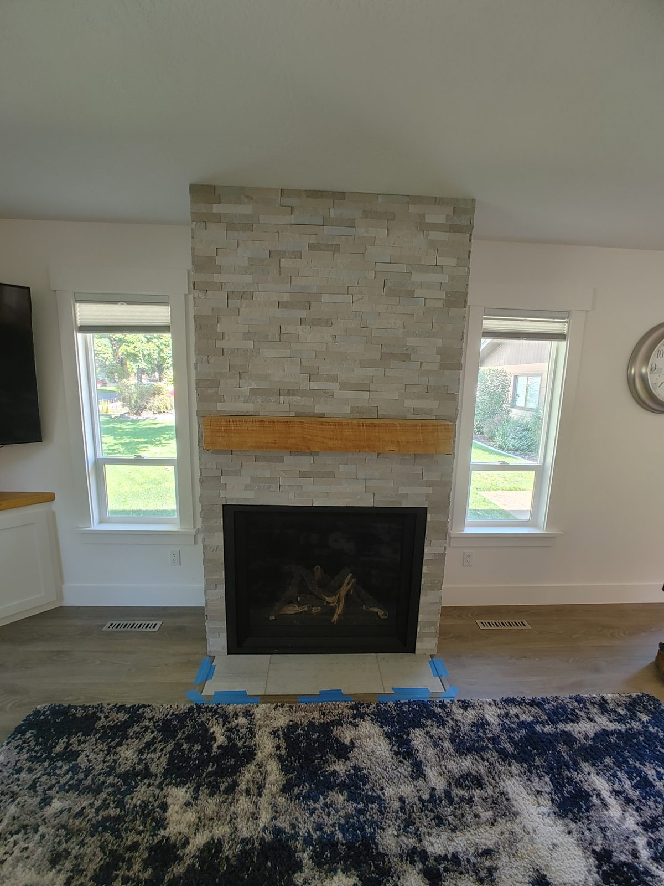
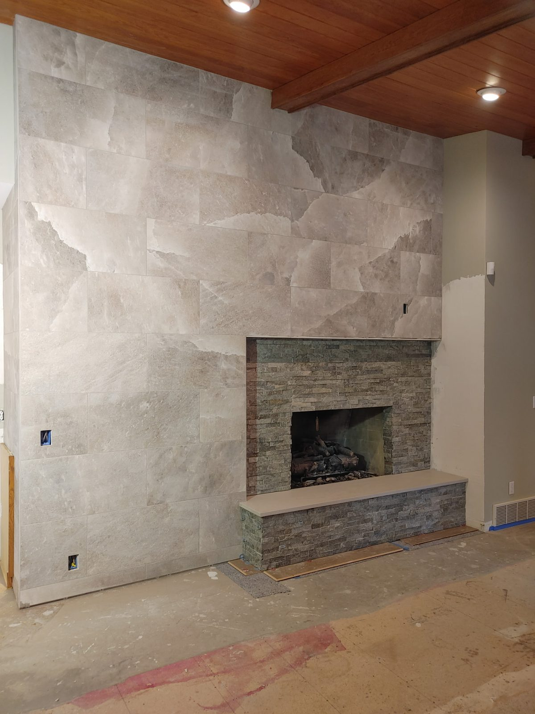

Recent Work
Tile Installation Projects
A look at recent tile installation work from DCB Construction in the Post Falls region.




Tile floors, walls, showers, backsplashes, and fireplace surrounds — installed right the first time for Post Falls homes.
Tile is the difference between a remodel that looks great for a year and one that looks great for 20. The substrate prep, waterproofing, and grout work are what determine whether tile lasts — and they're exactly the steps that get rushed by less-experienced installers. DCB Construction LLC has been installing tile in Post Falls homes for over a decade — ceramic, porcelain, natural stone, mosaic, large-format — across floors, walls, showers, backsplashes, and fireplace surrounds.
We work with the material you want and the substrate you have. We don't shortcut the underlayment, we don't paint over uneven subfloors, and we don't grout with the wrong product for the application.
A look at recent tile installation work from DCB Construction in the Post Falls region.


Post Falls homes are newer than most of what we work on, which shifts the tile conversation away from repair and toward format and layout. Subfloors are generally sound and engineered, framing is modern, and deflection is rarely the problem it is in older housing.
What takes its place is flatness tolerance. The large-format tile most people now want — anything from 24 inches up, and certainly the slab-look panels — needs a substrate flat to a far tighter tolerance than a production builder finishes a floor to. Flat enough for carpet is not flat enough for a 24-by-48 tile. Getting there means self-levelling compound or floor patch, and skipping that step is exactly how a brand-new floor ends up with visible lippage.
Open-plan layouts are the other Post Falls-specific factor. When tile runs continuously from an entry through a kitchen and down a hallway with no doorway to break it, the layout has to be set once, at the start, for the entire run. Getting it wrong leaves a sliver cut along the most visible wall in the house, and there is no correcting it afterwards without pulling the floor up.
The last thing we see regularly here is builder-grade grout used in wet areas where it was never the right product. It looks fine for a couple of years and then discolours and crumbles at exactly the joints that matter.
Looking for other work in Post Falls? See: kitchen remodeling in Post Falls, bathroom remodeling in Post Falls, walk-in showers in Post Falls, or visit our Post Falls area page.
Yes, and it suits the newer housing here well. The one thing that has to be dealt with first is substrate flatness. Large tile telegraphs every high and low spot as lippage between adjacent edges, and production floors are not finished flat enough for it as-built. We check the floor with a straightedge and use self-levelling compound or patch where needed. That prep is the difference between a large-format floor that looks like a single surface and one that catches your eye at every joint.
We plan the whole run before setting anything. In an open plan the tile carries from room to room without a doorway to hide a transition, so the layout has to be worked out end to end and centred on whatever the eye actually lands on rather than on the first wall we happen to start from. We dry-lay and snap lines for the full run first. The goal is no sliver cuts on visible walls and grout lines that stay square across the entire floor.
Labor runs $8 to $20 per square foot plus tile and materials. Standard 12x24 porcelain on a level subfloor is around $10 to $12. A kitchen backsplash typically comes in at $800 to $1,800 installed and a bathroom floor at $1,500 to $3,500. Because Post Falls subfloors usually need less remediation than older homes, prep tends to be a smaller line item here, though flatness work for large-format tile still has to be accounted for.
Tile by itself does not normally require a permit. The remodel it belongs to frequently does, and where that is the case we file with the City of Post Falls Building Department as part of the overall project rather than leaving it to you.